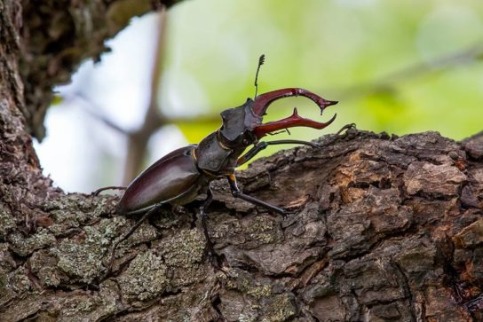
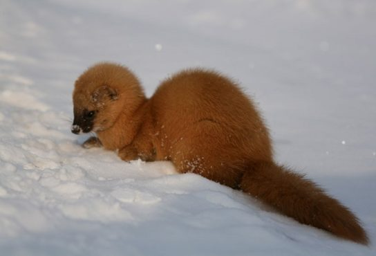
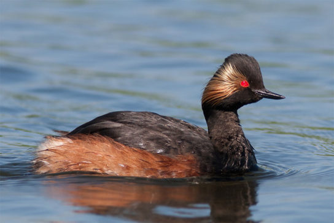

Красная книга удмуртии
Как и во всех других реагионах страны, в Удмуртии тоже есть свой список редких, вымирающих видов. Этот список называется "Красной Книгой", в нем собраны основные вымирающие виды животных, растений, насекомых и т.п. Пример редкого насекомого - Жук олень.

"Жук-олень — Lucanus cervus."
Данный жук славится тем, что имеет специфическую внешность, в том числе красивые рога, которые привлекают внимание. А вот пример редкого пушистого зверька, встречающегося на территории нашего края - Колонок.

"Колонок — Mustela sibirica Pallas"
Этот с виду маленький и пушистый зверек на самом деле хищник. По внешнему виду похож на ласку или норку. Данный зверек очень редкий и, помимо нашего региона, он обитает в Сибири и на Дальнем востоке. А на следующем изображении можно увидеть Черношейную поганку - водоплавающая птица из семейства поганковых:

"Черношейная поганка - Podiceps nigricollis"
Эта удивительная красноглазая птичка обитает на заболоченных местах и живет в колониях. Нельзя не отметить ее огненно-красные глаза. Интересный факт - Латинское название (Podiceps) относится к тому факту, что лапы прикреплены к телу в области заднего прохода. Эта адаптация облегчает погружение, перемещение и передвижение лапами в воде.